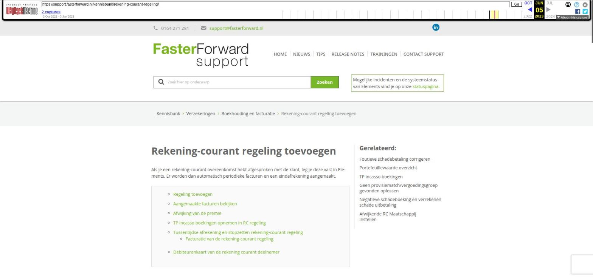

Soort document toevoegen

Tekstinhoud
Soort document toevoegen
Indien je tijdens het toevoegen van documenten aan een dossier merkt dat het niet mogelijk is om het gewenste 'Soort document' te selecteren, is het mogelijk om hier zelf een nieuw 'soort document' voor aan te maken. Zo zorg je ervoor dat ieder document de juiste soort heeft.
Soorten documenten beheren
Soort document opzoeken
Soort document toevoegen
Aan te leveren door
Zichtbaar voor klant
Aanmerken als contract
Soort document koppelen aan categorie
Categorie aanmaken
HDN en AFD documenten en aanpassen
Soorten documenten beheren
Om de stukkenlijst of lijst 'soort document' uit te breiden, ga je rechtsboven naar de Beheer module. Onder "Documenten" kies je voor "Soort documenten beheer".
Let op: alleen de beheerders van jouw organisatie hebben toegang tot deze module.
In dit overzicht zie je alle categorieën en alle soorten documenten, die in eBlinqx aanwezig zijn.
Soort document opzoeken
Via de actie 'Overzicht soort document' krijg je alle soort documenten zichtbaar en daarbij een zoekfilter.
Zo kan je door middel van het filter zoeken op naam of bijvoorbeeld protocol. Via het wijzigingsicoon achter het soort document kan je het document aanpassen.
Soort document toevoegen
Wanneer je zelf een nieuw soort document wilt toevoegen, klik je op het startoverzicht links bij '
Acties' op "Soort document toevoegen".
Je dient vervolgens verschillende velden in te vullen, waaronder de naam van het stuk. Hieronder lees je meer over de andere velden.
Aan te leveren door
Per soort document kan aangeven worden wie er verantwoordelijk is voor de aanlevering van het stuk. Is dat de klant, de maatschappij of ben je dat zelf, de deelnemer? De functie daarachter is dat er met tags de openstaande stukken opgehaald kunnen worden, die bijvoorbeeld door de klant nog aangeleverd moeten worden. De stukken waarbij gekozen is voor 'Aanleveren door klant' zullen in de Digimap of Uwkluis getoond worden, zodat de klant ze daar kan uploaden. Staat 'Aan te leveren door' op maatschappij of deelnemer dan zal het stuk of document niet worden getoond in de Digimap of Uwkluis.
Wanneer er een stuk door een klant aangeleverd moet worden, kan er vervolgens gekozen worden tussen voor de "eerste persoon", voor de "partner" of "Niet van toepassing" bijvoorbeeld een "Salarisstrook 1ste aanvrager" of "Salarisstrook 2de aanvrager".
Zichtbaar voor klant
Daarnaast zijn er nog 2 opties:
Standaard publiek toevoegen: wanneer dit aangevinkt is, is het document gelijk publiek wanneer deze toegevoegd wordt. Hierdoor wordt deze getoond in de Digimap of Uwkluis (mits aan te leveren door op klant staat).
Toelichting: hetgeen wat je hier invoert, wordt in de Digimap of Uwkluis getoond wanneer men op het 'i' icoon klikt bij het document.
Aanmerken als contract
Via Aplaza kan het zijn dat je documenten aangeleverd krijgt, bijvoorbeeld een polisblad. Dit polisblad wil je gekoppeld hebben aan een product of polisonderdeel. In soort documenten beheer kan je deze documenten aanmerken als contract, zodat deze automatisch als contract hieraan gekoppeld worden. Hier lees je er meer over.
Klik vervolgens op het opslaanicoon om deze op te slaan.
Soort document koppelen aan categorie
Het soort document is nu toegevoegd, maar het is nog niet te selecteren omdat het nog toegewezen moet worden aan een bepaalde categorie. Om dit stuk toe te voegen aan de categorie "Algemeen" klik je hier op het wijzigingsicoon.
Aan de linkerkant worden alle mogelijke documenten die beschikbaar zijn getoond. Uit de lijst selecteer je het zojuist aangemaakte stuk en vervolgens klik je op de knop 'Toevoegen'. Vervolgens wordt het stuk naar de rechterlijst verplaatst. Klik op het opslaanicoon om op te slaan. Klik op "omhoog" om vervolgens te controleren dat de gekozen rubriek uitgebreid is met het door jou aangemaakte stuk.
Categorie aanmaken
Het kan zijn dat de gewenste categorie er niet tussenstaat. Dan kan je zelf een categorie aanmaken via het hoofdscherm en de knop 'Categorie toevoegen'.
De categorie geef je een naam en je slaat dit op. Je kunt dan soort documenten aan de categorie koppelen. Het is mogelijk om een categorie te verwijderen als hier geen soort documenten aan gekoppeld zijn.
HDN en AFD documenten en aanpassen
Documenten met het rode icoon geven aan dat het een HDN document is. Dit betekent dat deze documenten worden herkend wanneer de stukkenlijst vanuit de maatschappij binnenkomt. Deze documenten worden dan automatisch samengevoegd indien de HDN codes overeenkomen.
Ook heb je berichten die het AFD protocol hebben. Het is niet mogelijk zelf een HDN of AFD soort document aan te maken. Deze worden door Blinqx generiek toegevoegd o.b.v. aangeleverde gegevens van HDN.
Het is wel mogelijk om het soort document een eigen naam te geven, ook bij een HDN document. Let op: in Aplaza – Instellingen worden de originele namen van het AFD bericht getoond. Pas je de naam hiervan aan dan zie je deze aangepaste naam hier niet terug.
Laatste update: 3 november 2025
Was deze informatie nuttig?
Ja Nee
[Opmerking archivering: dit artikel staat onder twee kennisbankcategorieën: Hypotheken > Hypotheek aanvragen, en Dossier > Documenten.]